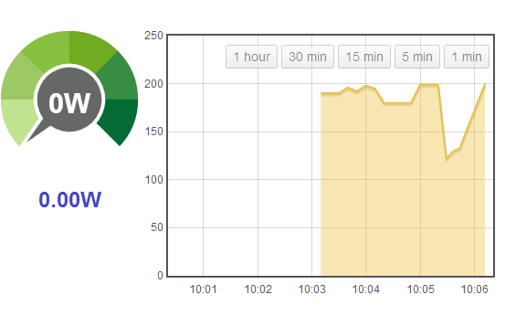
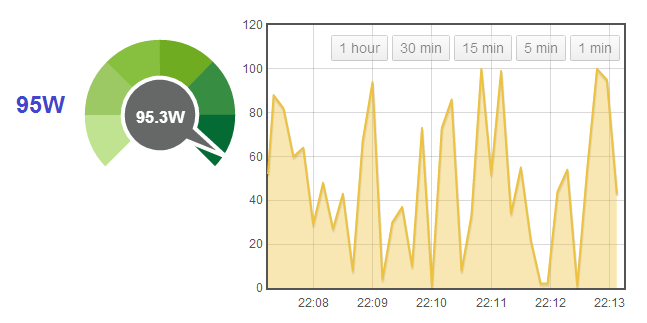

Hi Folks,
I'm a couple of days into the wonderful new world of emoncms. My local pi-based install is working well, but for the past couple of days, I have been unable to make any of the dashboard widgets work on the public emoncms.org site.
They were working, but now I just get zeros everywhere, with both dials or feedvalues. I don't know what I did wrong, but as a new user, I probably did something stupid, and I just can't work my way out of it again.
My inputs are working OK, as are my feeds, and even the dashboard graphs are working too - just not the widgets.
I've tried recreating deleting/recreating feeds, deleting/reconfiguring inputs, and I've even created new dashboards - no joy. My username is 'griffous' and if something has be deleted/reset to make it work again, I can set up again from scratch, if necessary. There's only 3-4 days of data so far anyway.
Thanks in advance for any help!
Jonathan
Re: Online emoncms widgets not working
Sorry to bump, but I just can't work this one out by myself.
Is it just me then? Do I need to create a new account and try that next?
Thanks,
Jonathan
Re: Online emoncms widgets not working
I've never used emonCMS for real, but I've deleted, added and changed all manner of things using the same account and never seen anything that wasn't mendable. So hopefully a stupid question - you have configured it to the correct feed, scaling etc is all correct? If you changed your feeds around after you made the dashboard, they might need reconnecting by re-selecting the feed.
Otherwise, somebody who knows emonCMS better needs to join in.
Re: Online emoncms widgets not working
I've PM'd you!
Paul
Re: Online emoncms widgets not working
Hi Robert,
I certainly don't think I've done anything especially silly. I have tried configuring different scales, as well as picking a range of feeds, including different data types: Watts, kW, Kwh, all with the same result.
I also have a local emoncms install running on my raspberry pi and it IS correctly working with widgets, so the input data is definitely OK. I deleted the online emoncms inputs and carefully recreated the ruleset from my local install here, but I still had the same result.
There's every chance I clicked too fast for my own good at some point, and perhaps crossed some feeds along the way.
Paul has graciously offered to take a look, so hopefully he finds something - thanks Paul!
Jonathan
Re: Online emoncms widgets not working
Jonathan
I've not used your inputs, processes, feeds & dashboards, and instead fired a load of json data to emoncms on node1, which I've logged to a test feed, and which feeds a 'test' dashboard containing a dial & feedvalue widget, as well as a realtime graph.
Although the data is logged OK in the realtime graph, I can confirm that the dial & feedvalue have, as you have described, remained at zero.
Everything else looks OK, but can you confirm how often you are sending data to emoncms? the usual period is every 10 seconds or so, but yours seem more frequent?
Paul

Re: Online emoncms widgets not working
Jonathan,
I'm using a script to send identical random json data every 10 seconds to both your emoncms.org account, and also to mine. Whilst your widgets are not working, mine is, using exactly the same data - see screenprint below.
I'll leave the script running, so you can, by process of elimination do some checking.
I would start by stopping your inputs completely, and see if my test data is then displayed in your widgets.
It's an unusual problem, please let us know how you get on (and when you want me to stop the script!).
Paul

Re: Online emoncms widgets not working
Hi Paul,
Thanks for having a look into it for me. Good to have an educated perspective to validate that it's not just my 'user error Very odd.
Yes, I apologise about the frequency, my arduino (one of Robin Emley's PV routers) is sending too frequently - 2 seconds - but C programming isn't a strength of mine, so as yet, I'm not quite sure how to 'slow it down' whilst still getting meaningful averages. I will continue to work on this next week.
I was also rather hoping that the same effect could be achieved by throttling the emonhub instead - do you know if this can be done easily, as a short-term fix? The provided emonhub.conf doesn't come with many examples of its parameters :(
I took your suggestion, disabling the emonhub for a period of minutes, hoping to see my dashboard dial widgets spring to life, but sadly, they didn't. Do you have a feel for how long I may need to disable the input, to test your theory?
By all means, you may stop your script - and thank you for creating it for me.
I feel the next best step is probably to reset my entire account, along with all data history, in preference to registering a whole new username/account. Who can I speak with to get this underway for a 'fresh start'?
Thanks,
Jonathan
Re: Online emoncms widgets not working
Sorry for not looking at this sooner, thankyou Paul for your email. The problem is to do with feed naming, the dials have a bug when there are certain non alphanumeric characters included. I've stripped these out of your feeds Jonathan to test and the dial now shows the correct value I think. Il look into a way to make this work with the non alphanumeric characters
Re: Online emoncms widgets not working
Ah brilliant - yes, that seems to have done it!
Thank you both. Is the list of unhandled feed names documented somewhere, so I can ensure I don't make the same mistake?
Thanks,
Jonathan
Re: Online emoncms widgets not working
I've stopped the script running now, and pleased that the problem has been solved.
I've not heard of that issue before either.
Paul